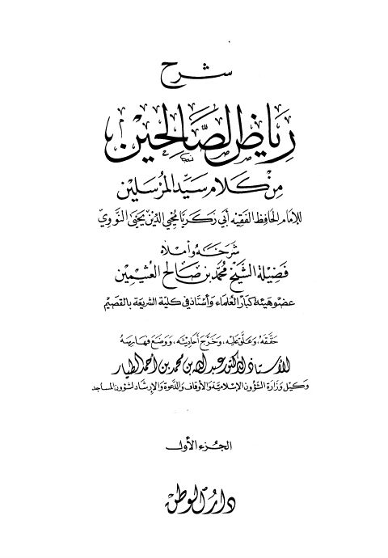

Downloads need an internet connection.
شرح رياض الصالحين للإمام يحيى بن شرف النووي
Authors: محمد بن صالح العثيمين
Editors: عبد الله بن محمد الطيار
Publishers: دار الوطن للنشر
**▫️ العنوان: شرح رياض الصالحين للإمام يحيى بن شرف النووي** ▪️ المؤلف: #محمد_بن_صالح_العثيمين ▫️ المحقق: #عبد_الله_بن_محمد_أحمد_الطيار ▪️ الناشر: #دار_الوطن ▫️ تاريخ النشر: 1415هـ 1995م ▪️ بلد النشر: الرياض، #السعودية ▫️ الطبعة: 1 ▪️ عدد الأجزاء: 7 ▫️ نوع الوعاء: #كتاب ▪️ التصنيف الرئيسي: #الحديث_وعلومه ▫️ التصنيف الفرعي: #المسانيد_الأخرى_والجوامع ۪